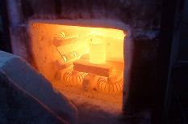
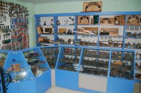
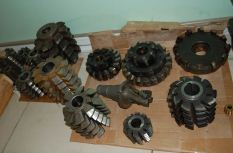

ООО «Пром Трейд»
залог успешного сотрудничества
Наша компания была основана в 2003 г. и успешно развивается в сфере производства и продажи металлорежущего инструмента и оснастки.
ООО «Пром Трейд» изготавливает: режущий инструмент по ГОСТу и специальный инструмент по чертежам заказчика, штампы, пресс формы, технологическую оснастку. Оказываем услуги по механической обработке деталей любой сложности и всех видов доработки. Постоянно в наличии на складе широкий выбор металлорежущего инструмента производства России и стран СНГ. За годы работы компания зарекомендовала себя как надежный и постоянный партнер.

Механическая обработка металлов
Оказываем услуги по механической обработке металлов и изготовлению деталей, осуществляем: токарные работы (в т.ч. на станках с ЧПУ), фрезерные работы ...

Термическая обработка
Производим следующие виды термической обработки деталей: Закалка (в т.ч. с нагревом ТВЧ), Отжиг, Цементация, Отпуск, Нормализация.Выполняем эксклюзивные работы по термической обработке любой сложности ...

Производство измерительного инструмента
Производство изготовит для Вашего предприятия контрольно-измерительные специальные и универсальные инструменты ...

Производство штампов,пресс-форм и техоснастки
Штампы для холодной и горячей штамповки (вырубные, вытяжные, гибочные, совмещенные, последовательные и др...
Продукция
Последние новости
Расширение производства — Август, 15
ООО «Пром Трейд» изготавливает: режущий инструмент по ГОСТу и специальный инструмент по чертежам заказчика, штампы, пресс формы, технологическую оснастку. Оказываем услуги по механической обработке деталей любой сложности и всех видов доработки. Постоянно в наличии на складе широкий выбор металлорежущего инструмента производства России и стран СНГ. За годы работы компания зарекомендовала себя как надежный и постоянный партнер.
Открылся новый магазин — Июль, 23
ООО «Пром Трейд» изготавливает: режущий инструмент по ГОСТу и специальный инструмент по чертежам заказчика, штампы, пресс формы, технологическую оснастку. Оказываем услуги по механической обработке деталей любой сложности и всех видов доработки. Постоянно в наличии на складе широкий выбор металлорежущего инструмента производства России и стран СНГ. За годы работы компания зарекомендовала себя как надежный и постоянный партнер.
Отзывы
" Добрый день. Я заказывал у этой компании партию режущего и спец. инструмента. Свою работу компания ООО «Пром Трейд» выполнила качественно и точно в поставленные временные рамки. Работой доволен на все 100%. Будем продолждать наше сотрудничество и далее ".
Матюхин А.Н.
Название компании
www.companyname.com